penguins |> ggplot(aes(x=body_mass_g, y = flipper_length_mm)) + geom_point()
In the previous lesson you learned the computer skills to make a huge variety of plots. Here we will focus on how to use colors, shapes, lines, and text effectively on a visualization.
In Section 1.3 Healy discusses perceptual features of shapes, colours, and lines, in scatter and line plots in particular. Depending on the number of data points and their spatial patter, colours and lines in particular can be effective tools for creating spatial structure and helping a message “pop” off the page. I’ll draw a few graphs – an you should experiment with creating some versions of your own – and then discuss which work best.
We’ll make some scatter plots with the palmerpenguin data because there are several quantitative variables and several categorical variables with different kinds of structure.
First a simple scatterplot with no colour or shape of flipper length against body mass. As you might expect, there is a positive correlation – heavier penguins are bigger penguins.
penguins |> ggplot(aes(x=body_mass_g, y = flipper_length_mm)) + geom_point()
How do you think the categorical variables sex, species, and island might structure these data? Draw a few variations using colour and shape and possibly size. (There are quite a few possible choices for assiging 2 or 3 variables to 2 or 3 aesthetics.)
penguins |> ggplot(aes(x=body_mass_g, y = flipper_length_mm,
color = sex, shape = island)) + geom_point()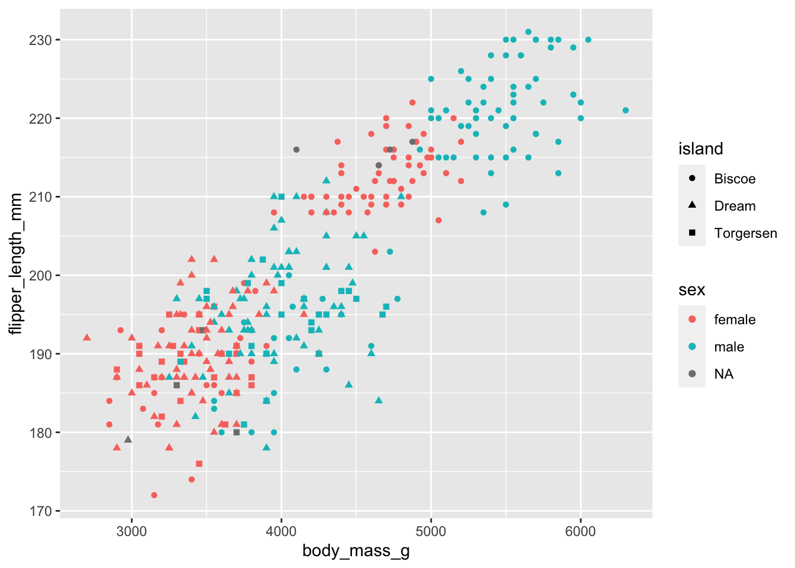
penguins |> ggplot(aes(x=body_mass_g, y = flipper_length_mm,
color = species, shape = sex)) + geom_point()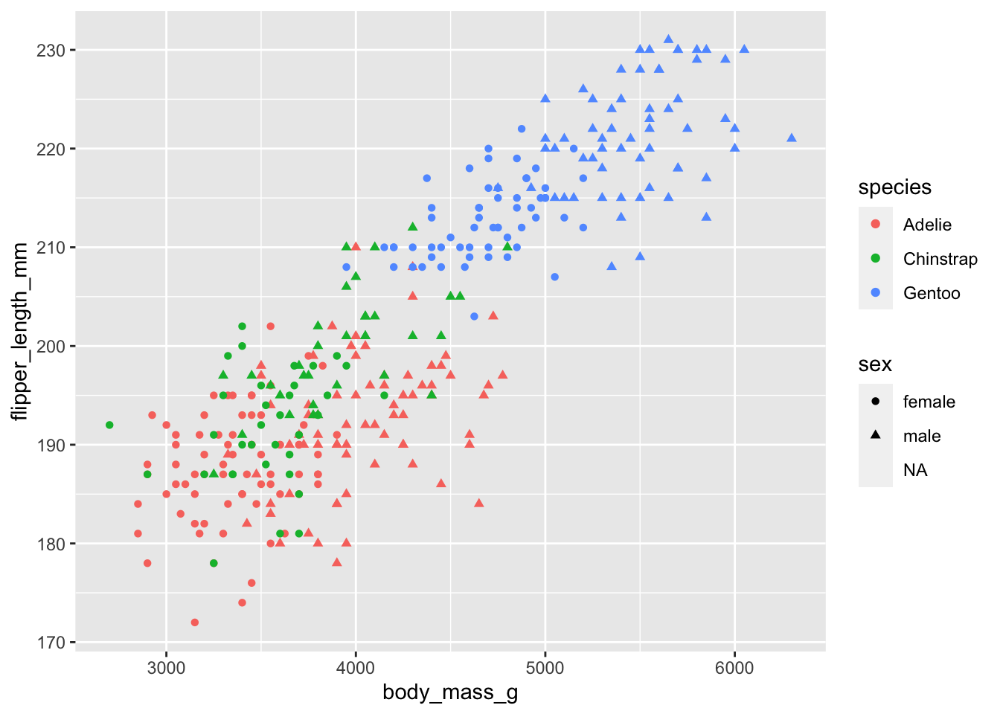
penguins |> ggplot(aes(x=body_mass_g, y = flipper_length_mm,
color = island, shape = species, size = sex)) + geom_point() +
scale_size_discrete(na.value = 0, range = c(1,2))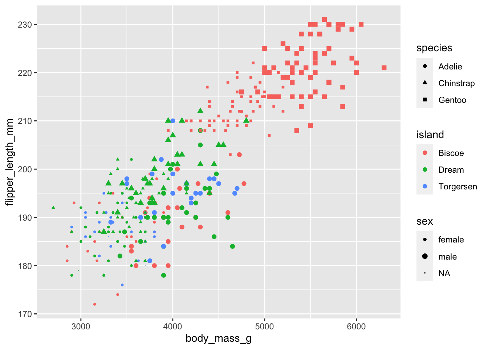
You might think that colour is the most noticable. So let’s try making new categories for each combination of species and sex and using this new variable for colour. (We will talk about the unite function in a future lesson.)
penguins |> unite(species_sex, c(species, sex)) |>
ggplot(aes(x=body_mass_g, y = flipper_length_mm, color = species_sex)) +
geom_point()Warning: Removed 2 rows containing missing values (geom_point).
That’s a lot of colours, but might be okay, particularly if we dropped the observations with missing sex and make some custom colours that paired males and females. (We’ll talk about filter when we discuss summarizing and transforming data.)
Colours are notoriously hard to select by hand. A good visual tool on the web is Color Brewer. You can display a set of discrete, continuous, or binned scales using functions in the RColorBrewer package (see the help for more).
display.brewer.all(6)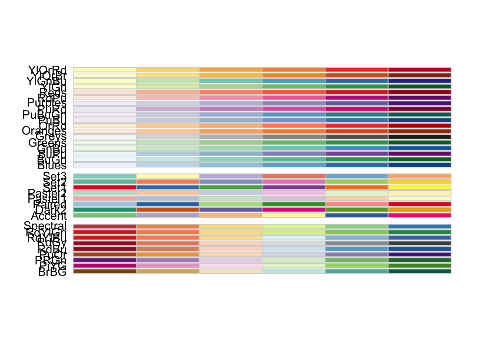
Here’s a version using the “Spectral” colour scale.
penguins |> filter(!is.na(sex)) |>
unite(species_sex, c(species, sex)) |>
ggplot(aes(x=body_mass_g, y = flipper_length_mm, color = species_sex)) +
geom_point() +
scale_color_brewer(palette = "Set1") # try Spectral too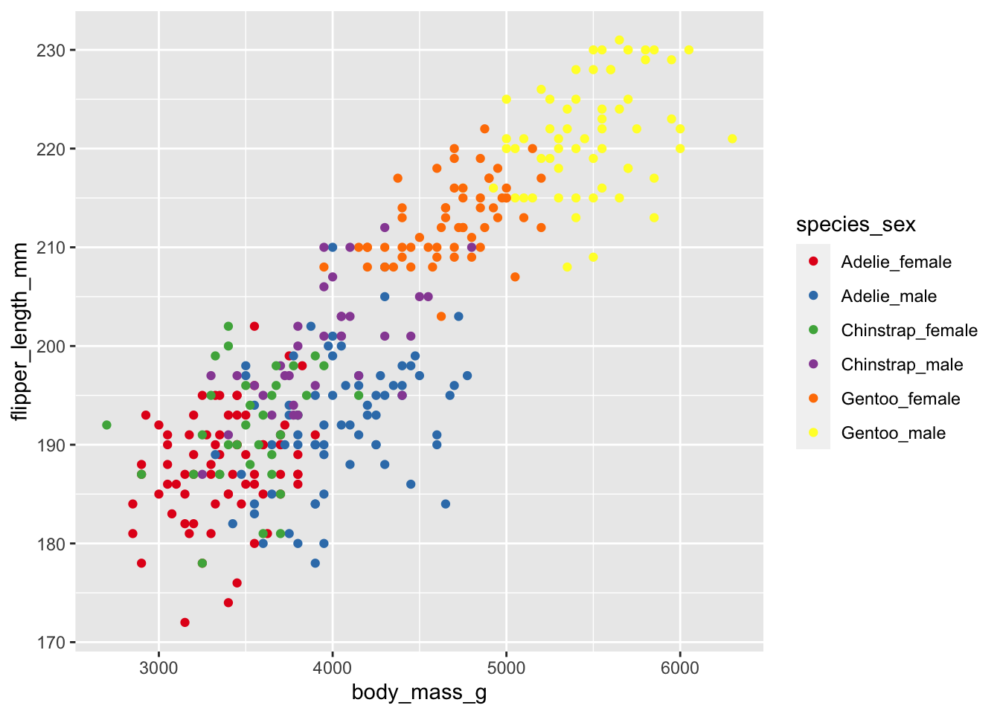
These colors looked okay in the palette, but on the plot we see a few problems:
There are a huge number of colour scales available for R. The number of possibilities makes selection of the right scale quite challenging. The viridis scales are often good choices. For discrete scales, common advice is to not use more that 5-6 colours on a single image. If you use more, your viewer has to spend a lot of time trying to decode the color scale. Here’s an example using viridis. You can set the beginning and ending colour (values range from 0 to 1) to customize the scale a bit. The end of the scale is yellow which I find difficult.
penguins |> filter(!is.na(sex)) |>
unite(species_sex, c(species, sex)) |>
ggplot(aes(x=body_mass_g, y = flipper_length_mm, color = species_sex)) +
geom_point() +
scale_color_viridis_d(begin = 0, end = 0.9, option = "D")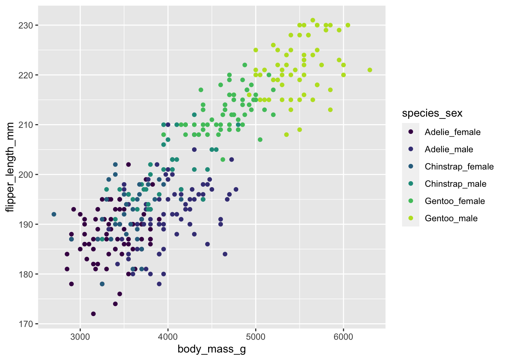
I think it’s clear that there are too many colours to be effective.
Step 1 is to explore the data by making many plots. Keep notes about what stands out or “works”. Step 2 is to decide on your message. Then pick out the elements that are most likely to highlight your message.
For these data there are three clear clusters of points corresponding to different speices. Let’s use colour for species. Within species the male and female penguins are smaller. Let’s use shape for sex. To highlight the difference in shape, it’s good to make the points large, but there are too many points here to have large symbols – they will blur together.
penguins |> filter(!is.na(sex)) |>
ggplot(aes(x=body_mass_g, y = flipper_length_mm, color = species, shape = sex)) +
geom_point(size=2) +
scale_color_viridis_d(begin = 0, end = 0.9, option = "D")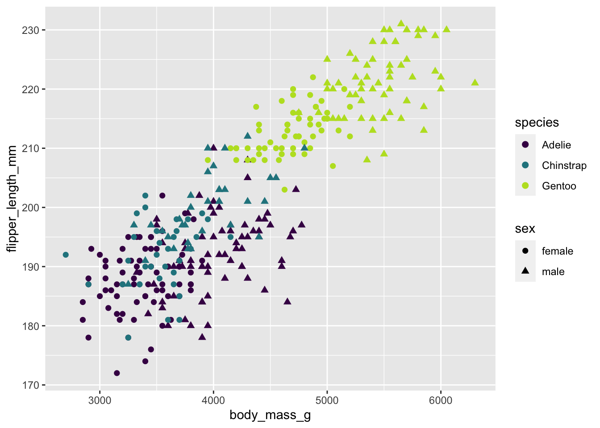
A nice trick in R is to overplot smaller white symbols on top of coloured symbols. We’ll do this just for female penguins. There is no legend drawn since we make the hollow symbols without an aesthetic mapping.
penguins |> filter(!is.na(sex)) |>
ggplot(aes(x=body_mass_g, y = flipper_length_mm, color = species)) +
geom_point(size=2) +
geom_point(data = penguins |> filter(sex == "female"), color = "white", size = 1) +
scale_color_viridis_d(begin = 0, end = 0.9, option = "D") +
theme_bw()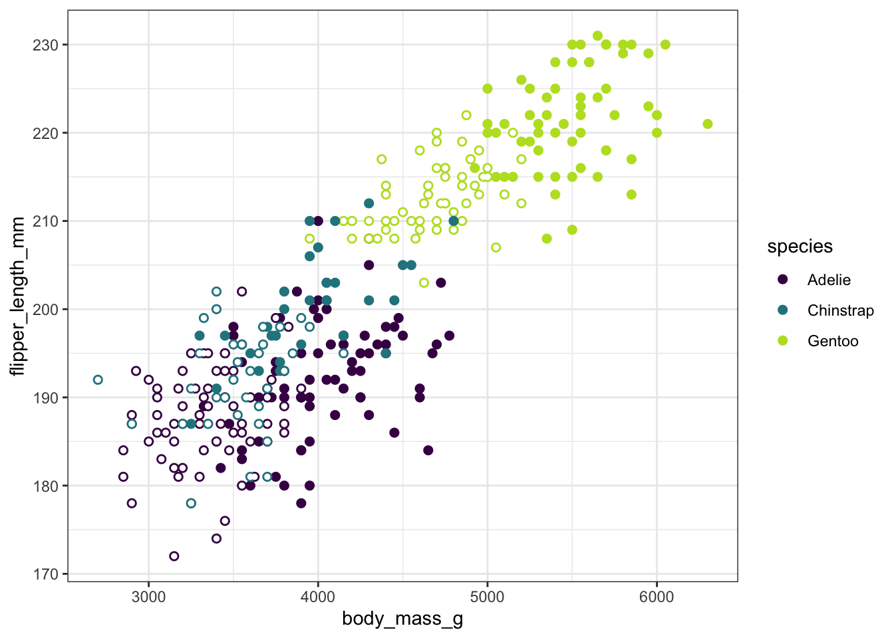
For the next few plots I will get a data set from a new source – the Tidy Tuesday project. You can read more about this in my notes on data sources. We will use data from this project in some future assignments and you may find an interesting dataset for your project in this collection.
I’m going to use a dataset of the number of PhDs granted by year in the USA. The raw data has a information on the field of study at three levels of description. I’ve simplified the data to counts by broad field by year.
library(tidytuesdayR)
tt <- tt_load("2019-02-19", "phd_by_field")
Downloading file 1 of 1: `phd_by_field.csv`phds <- tt$phd_by_field |>
group_by(broad_field, year) |>
summarise(n_phds = sum(n_phds, na.rm=TRUE))Let’s plot the data using points.
phds |> ggplot(aes(x = year, y = n_phds, color = broad_field)) + geom_point()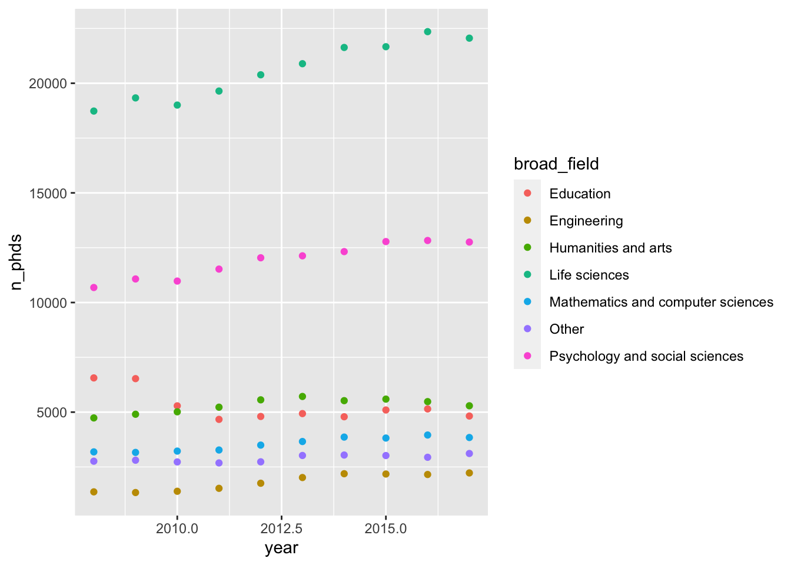
This is a good example of a dataset where lines would help to show the trend over time and add a visual clue to help see trends.
phds |> ggplot(aes(x = year, y = n_phds, color = broad_field)) +
geom_line()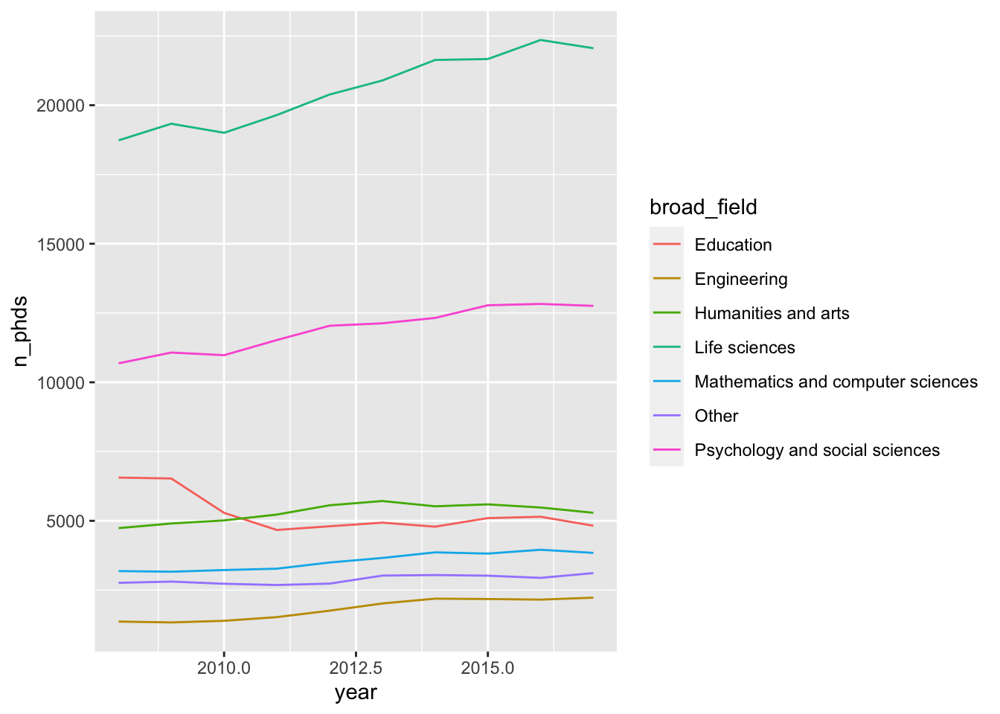
Sometimes its helpful to show the data points as well, especially if they are unevenly spaced or there are some missing data. Simply add a geom_point to the plot.
phds |> ggplot(aes(x = year, y = n_phds, color = broad_field)) +
geom_line() + geom_point()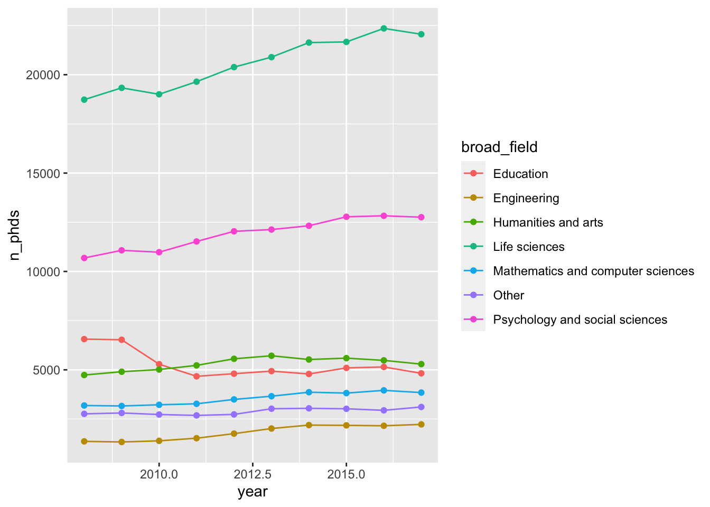
If you don’t want the colour, you can discard that and just show lines. The first example shows what happens if you do that – and the result looks terrible. We didn’t tell ggplot about groups in the data at all, so all the points are connected. The second example uses group as an aesthetic to reproduce the original figure, but without colour.
phds |> ggplot(aes(x = year, y = n_phds)) + geom_line()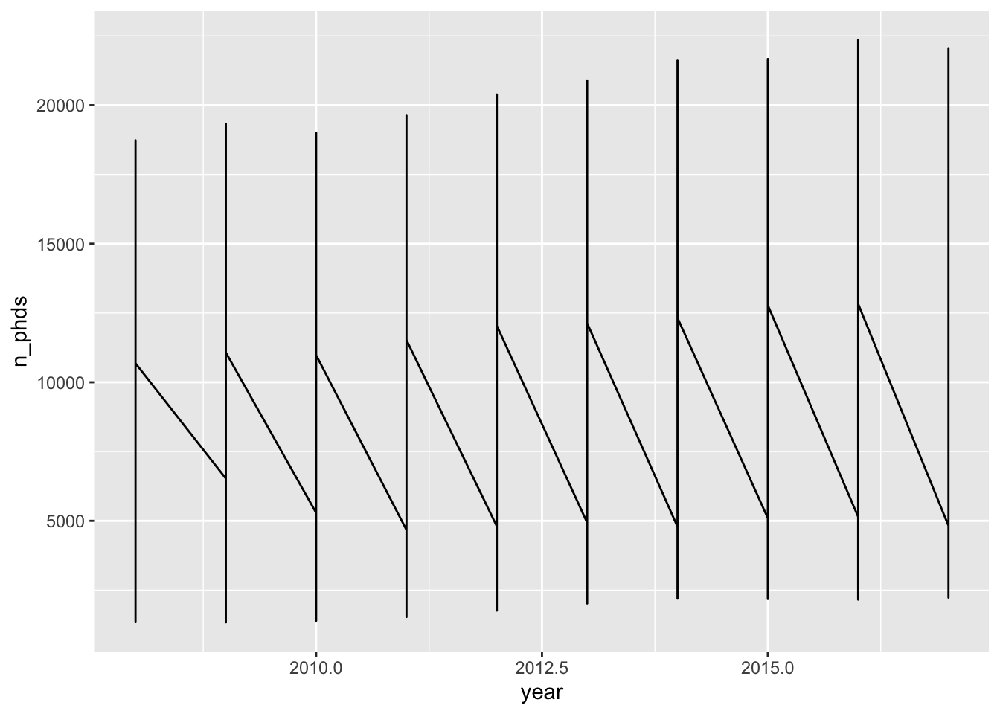
phds |> ggplot(aes(x = year, y = n_phds, group = broad_field)) + geom_line()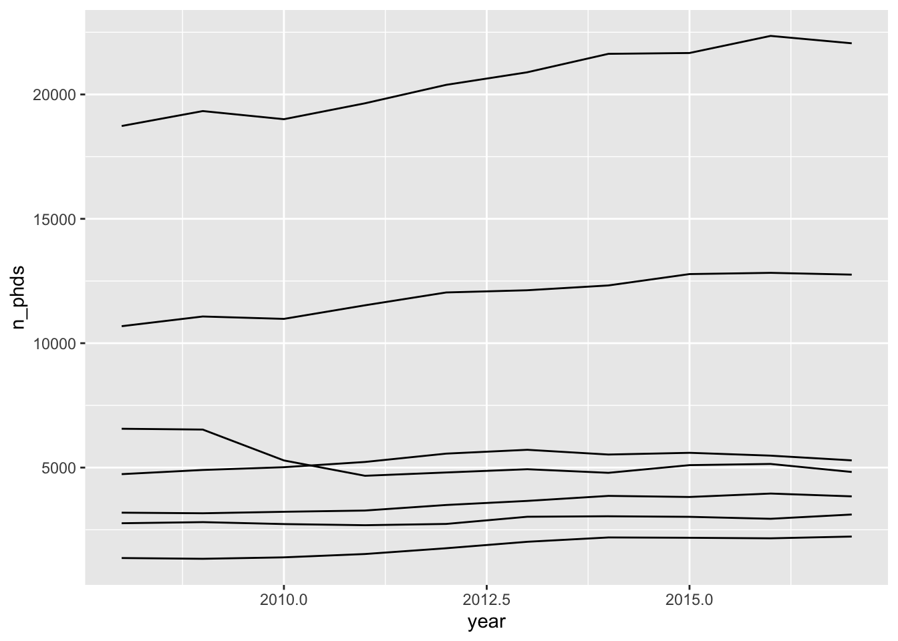
We can add text labels on to this data to identify each line.
phds |> ggplot(aes(x = year, y = n_phds, group = broad_field)) +
geom_line() +
geom_text(data = phds |> filter(year == 2017),
aes(label = broad_field),
hjust = 0,
size = 3) +
scale_x_continuous(breaks = 2008:2017, limits = c(2008, 2021)) 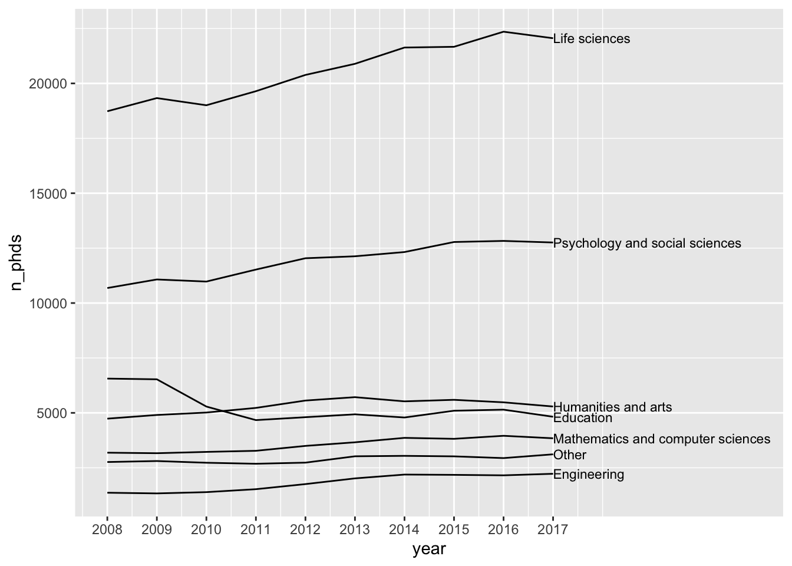
Those labels look a bit ugly, but this approach can sometimes be useful.
penguins |> ggplot(aes(x = bill_length_mm, y= bill_depth_mm,
color = sex, shape = species)) + geom_point()Warning: Removed 2 rows containing missing values (geom_point).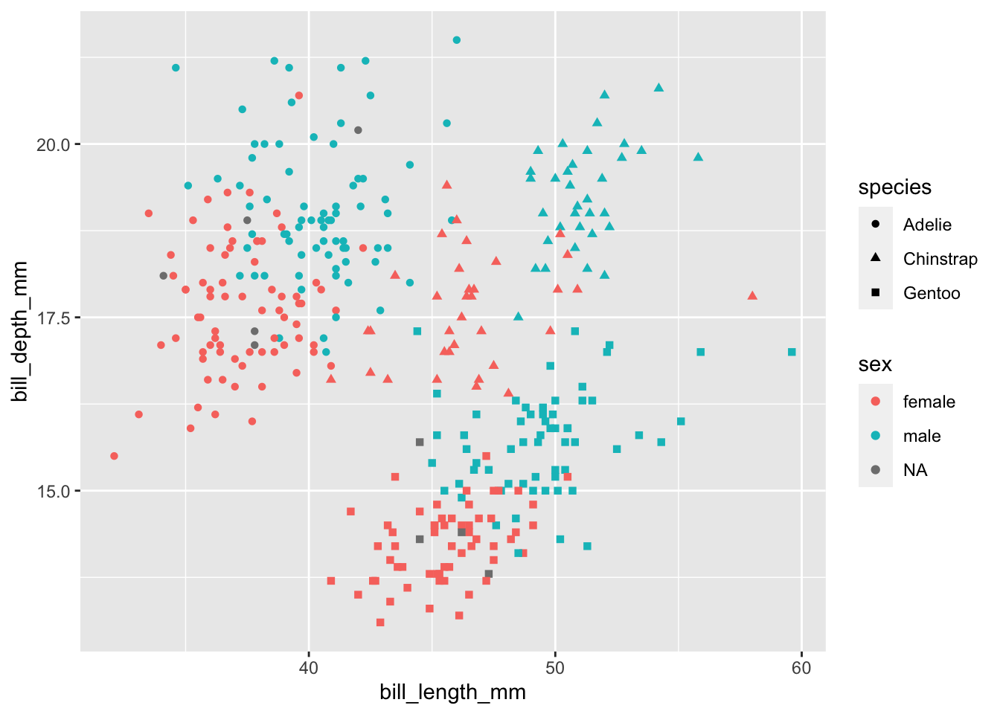